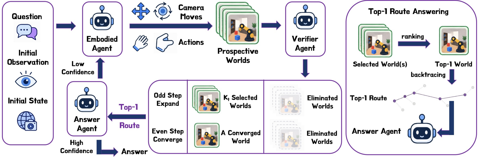
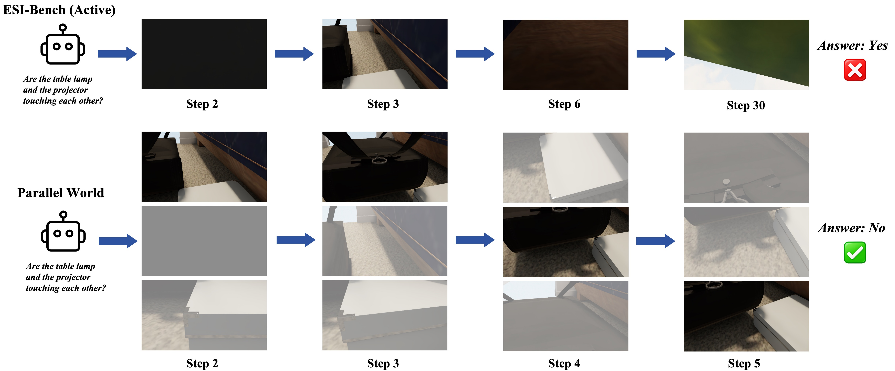

Expand
Enumerate camera and task actions from every retained world and render their prospective outcomes.
Active embodied reasoning · test-time scaling
Prospective world simulation for deliberate embodied exploration.

The verifier branches from restorable simulator states, retains an adaptive set of futures, and passes one physically consistent route to the answer agent.
Embodied agents must reason about physical environments through goal-directed perception and interaction. ParallelWorld is a verifier-guided test-time search framework that expands multiple executable futures from restorable simulator states, ranks their visual evidence, and retains informative branches through an adaptive Top-$K$ strategy. The answer model then reasons over a single physically consistent route. On ESI-Bench, ParallelWorld improves active embodied reasoning over sequential exploration across the evaluated subcategories.
Enumerate camera and task actions from every retained world and render their prospective outcomes.
Rank candidate branches by task-relevant visibility, ambiguity reduction, and complementary evidence.
Reconstruct the highest-ranked root-to-leaf route and reason over its physically consistent observations.
Adaptive Top-K
On ESI-Bench, ParallelWorld improves over sequential Active Exploration across all 28 evaluated subcategories.
Replace this panel with main_results when the final table is ready.
Gray views are unselected candidates; colored views are retained by the verifier. The branches shown here are illustrative.

@inproceedings{parallelworld2026,
title = {ParallelWorld: Prospective World Simulation for Active Embodied Reasoning},
author = {Authors},
booktitle = {arXiv},
year = {2026}
}